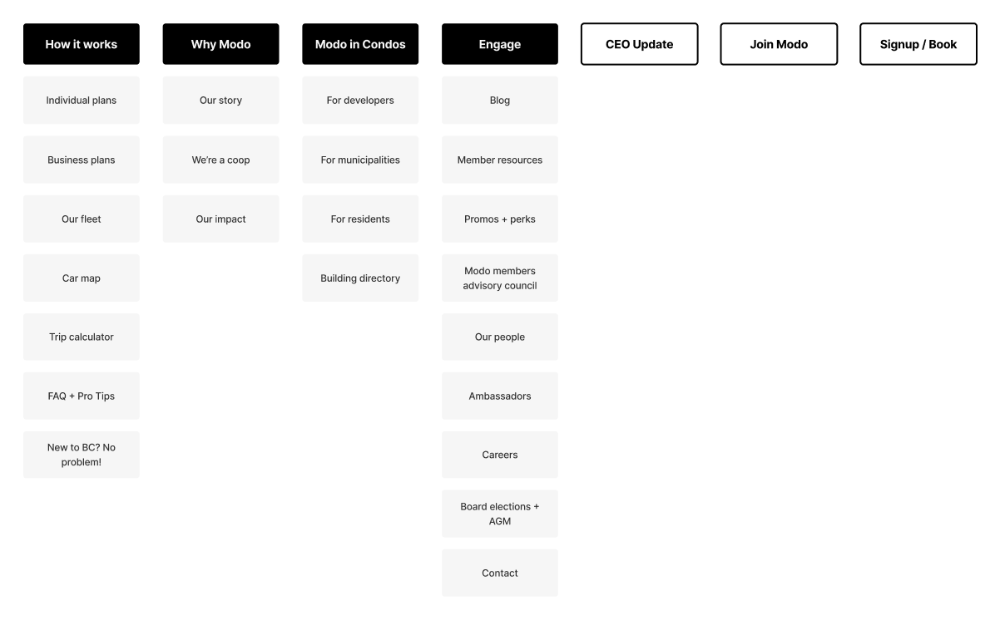

Modo Carsharing B2C
Modo, the oldest car sharing coop in BC, approached All Purpose to re-platform and redesign their website, as their marketing team were seeking a more efficient and autonomous content management process. In short, this project was a branding refresh and app alignment, content overhaul, and simplifying the car sharing coop’s marketing site (modo.coop).

The Challenge
Modo's marketing site had evolved into a 'franken-site' — a patchwork of pages and content that didn't reflect the brand or serve users effectively. The marketing team needed a more efficient and autonomous content management process, and the site needed a full re-platform and redesign.
Objectives
- Refresh branding to align with Modo mobile app
- Rethink page hierarchy and user flow
- Reduce content "fluff"
Approach
The question became: How might we simplify the overall site experience, align branding, and reduce support queries?
We leaned heavily into discovery — conducting stakeholder interviews and analysing the existing content architecture to understand where the friction points were.
Discovery & research
We conducted interviews with stakeholders and analysed the existing sitemap to identify redundancies and opportunities for consolidation.

